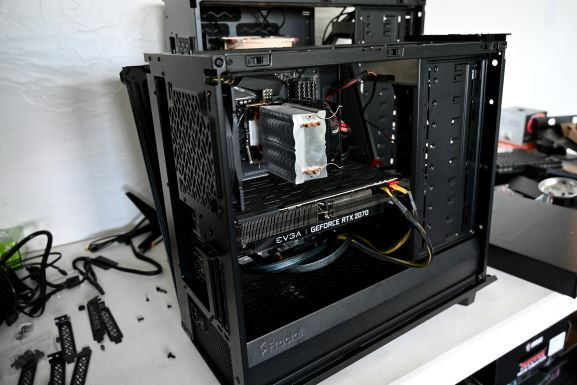
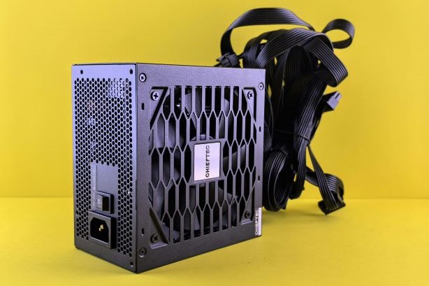
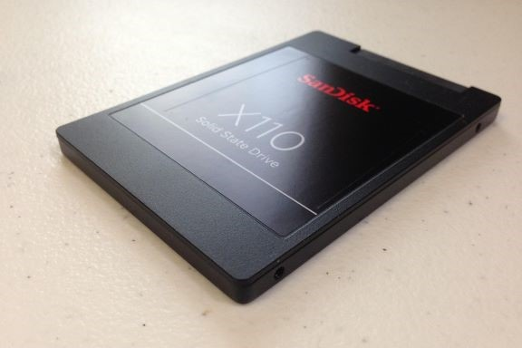

Select Components - B
CASE, PSU, STORAGE, Peripherals
Step 5: Select the Computer Case
The case that will hold the computer parts. Some cases can handle multiple formats but make sure the motherboard size (ATX, Mini-ATX, and Micro-ATX) is supported before selecting the case.
The case's main job is to hold the components and keep them from overheating. Most cases will come with fans and have options to add more. You will want to make sure that your case has a fan to move air in and out of the computer to avoid overheating your parts.
Size
There are different form factors in computer cases. The standard desktop form factor will lay flat on the desk under the monitor. Another common form factor is a tower that normally sits on the floor next to the desk. There is a full tower that has the most space, the most common mid tower, and a mini tower with the least amount of capacity. The Mini-ATX and Micro-ATX motherboards allow for some very small computer cases, but that may limit the amount of internal devices that will fit in the computer (video cards or hard drives).
The larger computer cases can often accept more than one size of motherboard. A mid tower case may handle ATX or Mini-ATX motherboards. Select a computer case that can accept the form factor (size) of the motherboard.
Step 6: Select the Power Supply
The Power Supply Unit (PSU) is a very important component of the computer. Without reliable, consistent power the computer will not run correctly. The main factors for selecting a PSU is to buy one that has enough Watts to handle all the devices in your computer. You can add up the Watt requirements of the CPU, motherboard, hard drives, video cards and any other devices in the computer to get a general number.
Some computer cases come with a power supply. These included PSUs are often inexpensive to keep the overall cost of the computer case lower. Beware of inexpensive power supplies, if the PSU fails or is unreliable the computer will not work. More expensive PSUs will have more Watts, more efficiency (bronze, silver, gold, platinum levels), a better warranty and more reliability. Select a power supply that works for the components in your computer.



Step 7: Select Storage
The operating system, documents and files are generally stored on hard drives. This is the type of memory that is retained after the computer is powered off. A computer needs at least one means of storage and there are not many variables in this decision just interface and size.
Solid-State Drive and/or Hard Disk Drive
Solid-state drive (SSD) uses integrated circuits to store data. These types of drives are much faster and more expensive than typical HDDs. That’s why SDDs are used for installing operating systems and frequently used applications.
HDDs, on the other hand, are used for large backups, long-term archiving, and storing vast media libraries. A hard disk drive (HDD) is a storage device that uses rotating disks with magnetic material to store data persistently.
Interface
Hard drives have different interfaces or ways that they will connect with the motherboard. There are Parallel ATA (PATA), Serial ATA (SATA), Small Computer System Interface (SCSI), or Serial Attached SCSI (SAS). Most consumer grade computers use the SATA interface. Whichever storage you select be sure the interface is supported by the motherboard.
Step 8: Select Peripherals
Monitor
Monitor is the screen you look at. If your monitor runs at a slow refresh rate or low quality, no matter how good your computer is, it will only display the quality monitor is limited to.
Refresh rate (measured in gigahertz - GHz) is a measure of how frequently the displayed picture or pixels, are updated.
Latency (measured in milliseconds - ms) is the amount of lag the monitor displays the information from the computer. So when you left click on your computer, it takes the monitor x milliseconds to display on the computer (x = latency).
There are 3 different screen types: TN, IPS, and VA. TN gets the best refresh rate and lowest latency, but has poor color reproduction. But it is also the cheapest type of monitor. IPS gets the worse refresh rate and latency, but the color of the screen is the best. But it is also the most expensive type of monitors. VA is in the middle of the pack.
The main difference between LCD (Liquid Crystal Display) and LED (Light Emitting Diode) monitors lies in their backlighting technology. LCD monitors use cold cathode fluorescent lamps (CCFLs) for backlighting, and LED monitors use light-emitting diodes for backlighting. All LED monitors are actually a type of LCD monitor. The term “LED monitor” is shorthand for “LED-backlit LCD monitor.”
Resolution. This is just how many pixels your screen has. Obviously, the more, the better resolution your screen can display. Some monitors can display 1080p, some can display 4k, and some can only display 720p. 1080 is most common standard nowadays.
Keyboard
There are two types of keyboards: membrane and mechanical. Membrane keyboards are the most common. They are the ones you see at school, at work, on your laptop, and so on. These keyboards are cheap and easy to mass produce. They are quiet, lighter, and more portable than mechanical keyboards. There is a rubber dome under each key, and when that rubber is pressed, it presses on a circuit board, which completes a circuit that passes a signal.
Mechanical keyboards are the more “premium option”. Instead of rubber membranes pressing on a circuit board, each key has an individual switch that sends a signal straight to the PC. These switches vary in actuation force and tactile feedback (noise).